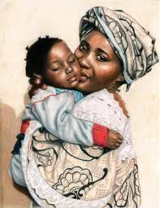

THE ORIGIN.
The Akan of Ghana are one of the "richest‟ ethnic groups in the country. They are known to be the first ethnic group that settled in Ghana, hence the reason for the name “kan (e)” which means "the first‟. There are several subgroups that are classified under the eight main clans of the Akan and all of these subgroups are well known for their rich culture. Among the Akan culture the chief is seen as the custodian of the land. To convey the words of the chief to the people, the spokesperson (Ͻkyeame), being a repository of the Akan customs, values and language, quotes the words of the chief appropriately, for easy understanding. The spokespersons staffs (Ͻkyeame Poma), magnificent gold–covered staffs, are carried by these spokespersons who are high–ranking officials within the court of the Akan chiefs in Ghana, as symbols of authority. The spokespersons staffs are usually classified under Akan symbolism as they are said to serve as a medium of communication. The staff is meant to constitute a principal symbol that defines the spokesperson's office and facilitate his functions in and out of the chief's court. To gain the relevant information about the unwritten perspectives of the Akan spokespersons staffs from experts in the field of Akan history, interview was used as the main form of data collection. From the study, it was evident that all spokespersons staffs (Ͻkyeame Poma), carry the philosophy of the group of people it represents. The spokesperson's staffs are also respected as an embodiment of the souls of the Akan people. On the unwritten perspectives of the Akan spokespersons staff, it was evident that the Ͻkyeames are not linguists (as they are popularly called) but rather spokespersons.